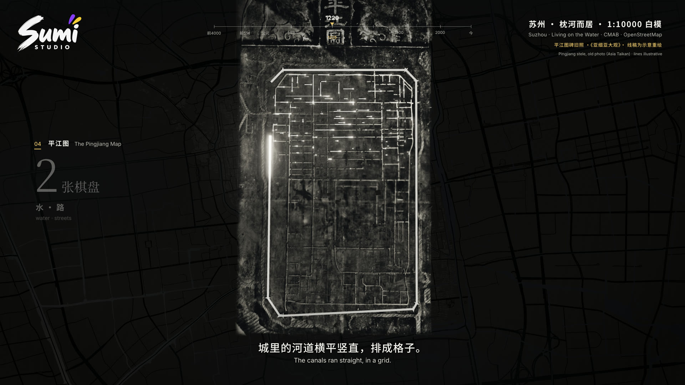
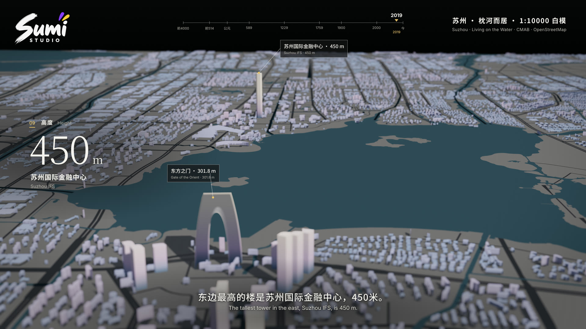

从六千年前的稻田，到今天的苏州。沿着水路，看一座城如何生长，又留下了什么。
完整作品 · 4 分 18 秒 · 中文旁白与中英字幕
网页播放 1080p / 24 fps
制作母版 4K / 16:9
把一座城，放回河流之间
片名取自杜荀鹤《送人游吴》：“君到姑苏见，人家尽枕河。”影片以人家与水为线索，经过平江图、古城保护与城市两翼，最终回到枕河而居。
92,681 栋建筑覆盖 32 × 21 公里的城区。建筑轮廓、高度与年代来自真实数据，历史阶段以专题图层和示意动画呈现。画面由 Three.js 逐帧渲染，38 句旁白与一首连续配乐共同决定影片的节奏。

将南宋石刻图的线条配准到今天的水系，呈现历史与当下的关系。

用建筑年代组织生长节奏，让古城与现代天际线在同一张地图上相遇。
从这部片子，带走一套方法
A reusable workflow for data-driven city films.
先有故事，再有地图
确定城市叙事，逐句核对事实，再整理建筑、道路、水系与历史图层。数据无法说明的部分，明确标注为示意。
让每一帧可以重做
帧号决定相机、建筑与字幕状态。逐帧渲染可断点续跑、并行处理，也能只重渲修改过的片段。
让旁白与音乐一起呼吸
保留旁白原速，用句间停顿调整画面时长和音乐对位；混音只按需压低人声频段，最后检查字幕、年份、跳帧与响度。
做下一座城市
white-model-city-film 包含 Skill 指令、分步参考、数据处理和渲染示例、旁白排时、混音及质检脚本。原创代码与文档采用 MIT 许可。
将 Skill 文件夹放入 Claude Code 的 ~/.claude/skills/ 或 Codex 的 ~/.codex/skills/；也可下载 .skill 包导入支持该格式的客户端。
“用 white-model-city-film，为我做一条关于杭州的白模城市短片。先给我故事线、数据来源与制作预算。”
开始前准备
Node.js、Python、Chrome 与 FFmpeg。旁白和配乐可使用已连接的 Sumi Studio MCP，每次生成使用你自己的积分。
示例保留完整制作代码；地图数据、历史图像、音频源文件、字体及品牌素材需按说明另行准备。仅下载源码不能直接重建成片。
安装、依赖与重建指南数据与致谢
形式与节奏参考 @EianLu 的成都城市短片。感谢原作者的启发。
- 建筑：CMAB，Zhang, Zhao & Long，CC BY 4.0。
- 道路、水系与部分地标高度：© OpenStreetMap contributors，ODbL。
- 卫星底图：Sentinel-2 cloudless 2016 by EOX，CC BY 4.0，含修改过的 Copernicus Sentinel 数据。
- 平江图示意重绘：描线参考 Siyuwj 的平江图照片，CC BY-SA 4.0，经描线、配准与示意重绘；拓片照片来自《亜細亜大観》第 14 辑，公有领域。
- 字体：Noto Sans/Serif CJK、Inter、Ma Shan Zheng，SIL OFL。

MIT 许可覆盖原创代码与文档。此页影片、剧照、音乐、旁白、标识及第三方素材不因此获得 MIT 授权；各自许可与署名要求继续适用。查看媒体使用说明。